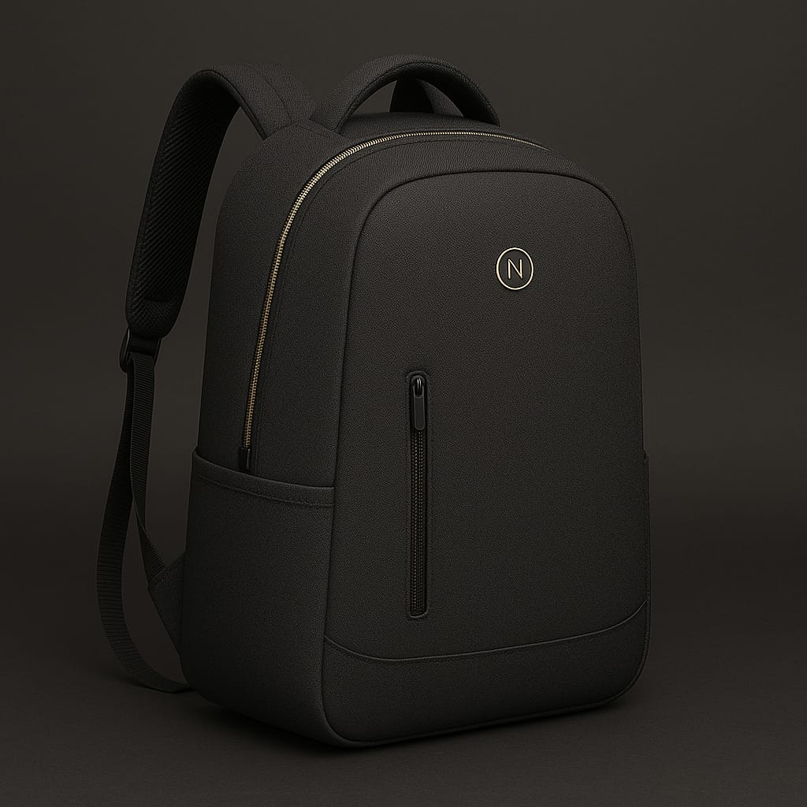

Bienvenido a Nexlock
Nexlock es la nueva generación de mochilas inteligentes. Combinamos tecnología, seguridad y estilo en un solo diseño. Cada modelo cuenta con conexión móvil, bloqueo digital, sensor de peso, alarma antirrobo y sistema GPS integrado.
¿Por qué elegir Nexlock?
- üîí Bloqueo y desbloqueo por aplicaci√≥n m√≥vil.
- üì¶ Sistema inteligente que te dice qu√© llevas dentro.
- üåß Material impermeable de alta resistencia.
- üìç Localizaci√≥n GPS en tiempo real.
- ⚖ Sensor de peso con alertas de sobrecarga.
Explora nuestra tienda para conocer todos los modelos y descubre por qué Nexlock redefine el concepto de movilidad inteligente.
Visión de Nexlock
Impulsar un estilo de vida moderno, conectado y seguro, donde cada detalle tecnológico haga tu día más eficiente.